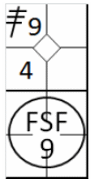
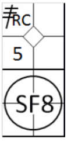
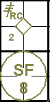
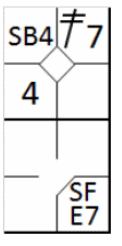
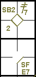
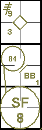
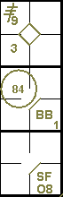

action { batter -> 3B9 }
/* The second batter hits a fly ball to right field in the foul zone, and the fielder catches the ball on the fly. */
action { batter -> FSF9 , runner3 -> + }

According to rule 9.08(d) of the OBR: Score a sacrifice fly when, before two are out, the batter hits a ball in flight handled by an outfielder or an infielder running in the outfield in fair or foul territory that
Comment: The official scorer shall score a sacrifice fly in accordance with Rule 9.08(d)(2) even though another runner is forced out by reason of the batter becoming a runner.
The rules specify that the hit must be caught in the outfield, and for this reason a sacrifice fly must be credited even if the ball is caught by an infielder running in the outfield. This applies particularly to the shortstop who, because of the nature of the position, often plays well back on the edge of the red dirt and can therefore, by running quickly, reach the outfield to catch a fly ball.
A sacrifice fly (like a sacrifice hit (bunt)) does not count as a time at bat. The abbreviation for a sacrifice fly is “SF” followed by the number of the fielder who made the putout.
Example 15:
A high ball to the center field becomes a sacrifice fly as it allows the runner on third base to score.
Obviously, the runner on third waited until the ball had been caught before leaving the base, otherwise he would
have been called out on appeal and cancelled out the sacrifice fly.
IMPORTANT: While a sacrifice hit (bunt) is credited if it enables a runner to advance a base, a
sacrifice fly is credited only if it enables a runner to reach home base.
| WBSC | Translation in the scoring tool | Tool |
|---|---|---|
|
 |
/* The first batter hits a triple to right field */ action { batter -> 3BRC } /* The batter hits a fly ball into center field which is caught in mid-air by the fielder, the runner scores the run */ action { batter -> SF8 , runner3 -> + } |
 |
A sacrifice fly is credited even if the ball is dropped by the fielder provided that, in the scorer’s opinion, the runner could have scored a run even without the error.
Example 16: Sacrifice fly to the left fielder, who drops the ball. As you can see, the advance by the runner to home base is annotated with the batting order number of the player who hit the sacrifice fly. Even though there has been an error which allows the batter-runner to occupy first base, the batter-runner is not charged with a time at bat.
| WBSC | Translation in the scoring tool | Tool |
|---|---|---|
|
 |
/* The first batter hits a double to left field */ action { batter -> 2B7 } /* The runner on second base steals third base */ action { runner2 -> SB } /* The batter hits a fly ball into the field. The fielder makes a mistake catching the ball, and the runner scores the run */ action { batter -> SFE7 , runner3 -> + } |
 |
Example 17:
A sacrifice fly also occurs when the ball is hit into foul territory in the outfield. Indeed, a catch by an
outfielder in foul territory puts the runners back into play, and they may try to advance.
The abbreviation “FSF” is used to designate a sacrifice fly in foul territory.
| WBSC | Translation in the scoring tool | Tool |
|---|---|---|
|
 |
/* The first batter hits a triple to right field */ action { batter -> 3B9 } /* The second batter hits a fly ball to right field in the foul zone, and the fielder catches the ball on the fly. */ action { batter -> FSF9 , runner3 -> + } |
|
A sacrifice fly must be credited if it enables a runner to score a run, even if another runner is tagged out at a base he was trying to reach.
Example 18: The center fielder, after catching a fly ball, assists the second baseman in time to put out the runner on first, while the runner on third reaches home base. This is noted as a double play.
| WBSC | Translation in the scoring tool | Tool |
|---|---|---|

|
/* The first batter hits a triple to right field */ action { batter -> 3B9 } /* The second batter reaches first base on a 'base on ball' */ action { batter -> BB } /* The batter hits a fly ball to center field, the fielder catches it on the fly. The fielder throws the ball back to the second baseman to get out the runner coming in from first. The runner on third base takes advantage to score the run. */ action { batter -> SF8 , runner1 -> 84 , runner3 -> + } |
 |
If the defense had already made a putout, the run would have to be scored before the out on second base (third putout), otherwise no run would have been scored and it would not be a sacrifice fly.
A sacrifice fly must also be credited if the ball is dropped by the defense and a runner is forced out, so long as the runner on third scores.
Example 19: The center fielder, after having dropped the ball, forces the runner out on second, while the other runner scores. In this case no error is charged to the outfielder, in accordance with rule 9.12(d)(4) of the OBR.
| WBSC | Translation in the scoring tool | Tool |
|---|---|---|

|
/* The first batter hits a triple to right field */ action { batter -> 3B9 } /* The second batter reaches first base on a 'base on ball' */ action { batter -> BB } /* The batter hits a fly ball to center field, the fielder catches it but lets it drop. The fielder throws the ball back to the second baseman to get out the runner coming in from first. The third baseman takes advantage to score the run */ action { batter -> SFO8 , runner1 -> 84 , runner3 -> + } |
 |